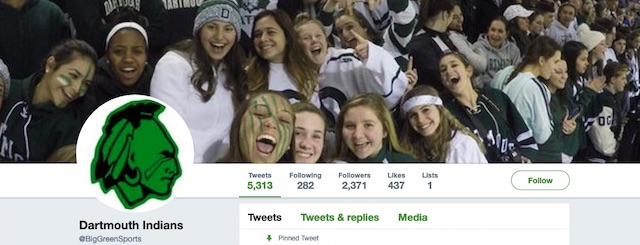

2020-07-07 08:00

In the last few weeks Aunt Jemima ditched the mammy on its syrup bottles with a press release explaining why images from slavery’s past were no longer in fashion. Perhaps it finally occurred to them they had been selling, as author M.M. Manring put it, a “Slave in a Box.” Uncle Ben’s retired its house servant because “now is the right time to evolve the Uncle Ben’s brand, including its visual brand identity.” And Land O’ Lakes dropped its Native American maiden, saying only “we need packaging that reflects the foundation and heart of our company culture.” Soon Mrs. Butterworth and Cream of Wheat followed suit.
On July 1st ADWeek reported that “three separate letters signed by 87 investment firms and shareholders worth a collective $620 billion asked Nike, FedEx and PepsiCo to terminate their business relationships with the NFL’s Washington Redskins unless the team agrees to change its controversial name.” ESPN Senior NFL Insider Adam Schefter reported the franchise was “undergoing a thorough review of the team’s name. And let’s be clear: There’s no review if there’s no change coming. Redskins on way out.” But the mother of all surprises was Mississippi’s abandonment of the Confederate flag.
One would think that in “liberal” Dartmouth, we could at least do as well as Mississippi. But one would be mistaken.
The Dartmouth Schools have kept their “Indian” mascot — the same one shared with Dartmouth College until 1974, when the college abandoned it because it was racist. Superintendent Bonnie Gifford and Board Chair Kathleen Amaral — both white — claim that the “Indian” and the greenface that “honors” it at sports events are townfolk’s way of “respecting” people murdered and sold into slavery when this area was colonized in 1619. And Dartmouth children contribute to “The Weekly Tribe” — a student showcase featuring mainly white faces.
To add injury to insult, Dartmouth pockets royalties it receives from a mascot merchandising agreement with OhioPyle Prints, which according to the District’s lawyer are not shared with any tribe. Dartmouth “Indian” gear is sold locally in drugstores and supermarkets, and Prep Sportswear, Spirit Shop Custom Apparel & Sportswear, Jostens, Inc., and Apparel Now all resell Dartmouth Indian gear online, though the District claims to know only of OhioPyle.
Last year the School Committee voted to block public hearings on mascots. Committee member John Nunes thought it was an insignificant issue, declaring at an October 28th meeting that he “bleeds Green” — the color of “war paint” students smear on their faces at sports events.
If Aunt Jemima was a “slave in a box,” all this is nothing more than an “Indian in a box.” For residents who cling to the lie that such cultural expropriation honors Native Americans, it’s the same lie slaveowners repeated of slaves enjoying being “cared for.”
A 2020 study at UC Berkeley found that 57% of Native Americans and 67% who engage in tribal cultural practices are insulted by mascots. The Chappaquiddick, the Herring Pond, and the Mashpee Wampanoag have all called for banning them.
Researchers have known for decades the damage mascots do to Native American kids (see Freyberg et al, 2008; Stegman and Phillips, 2014; Chaney, 2011; and Davis-Delano, 2020). The National Collegiate Athletic Association (NCAA) banned Native mascots in 2005. The American Psychological Association recommended retiring them in 2005 and the American Anthropological Assocation condemned mascots in 2015.
But in Dartmouth you’d think that Sherman was marching on Atlanta. A recent letter to the editor by Harvey Ussach asks, if we get rid of mascots, how are kids going to learn history? Well, why not teach kids the real history of genocide and enslavement and stop pretending that exploiting Native Americans is respectful?
It’s time to quit humoring clueless townies and immediately drop the Dartmouth Indian and hundreds like it. Senate Bill S.2593, “An Act Prohibiting the Use of Native American Mascots by Public Schools in the Commonwealth,” just moved out of committee. Legislators need to pass this bill to do what Superintendent Gifford, Committee Chair Amaral, Committee members Oliver and Nunes, and others entrusted to ensure a safe environment for all children simply refused to do — ban racist mascots.